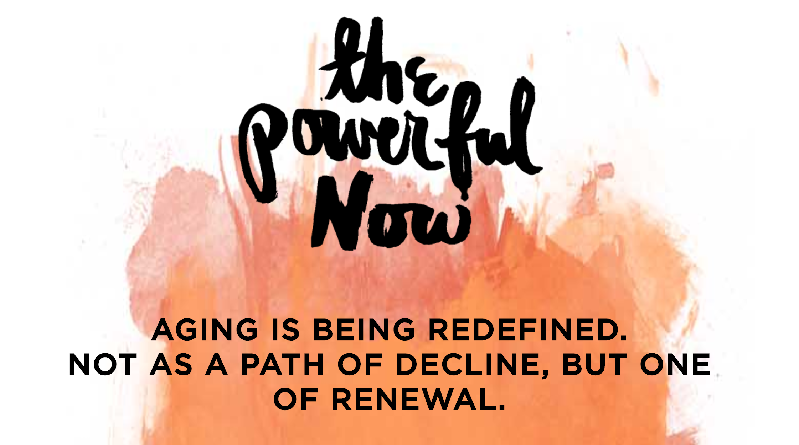

A few years ago, no one would have thought a UX/UI designer would be involved in organizational design. In terms of designing the flow of a business, there are consultants in HR and coaches to help with that. But, as design challenges become more complex, user experience also becomes more tricky. Some independent design firms have even joined some larger firms to address these bigger issues. One example of this is how IDEO joined the kyu collective.
IDEO is a firm that currently focuses on designing complex systems. Kyu collective is a formation of several companies. These companies are SYPartners, Sid Lee, Digital Kitchen, C2, and Red Peak Group. In a piece about the joining, written by Tim Brown of IDEO, he states that a current design problem people are facing is the rate of change with advanced technology. It has completely outpaced our “industrial-era organizations and infrastructure.” In order to address that problem, there needs to be a broad set of collaborators. For IDEO, those collaborators that shared their viewpoint were part of the kyu collective.
“The issues that UX designers are tackling have become more complex, and we’ve realized that we should embrace this complexity and include new ways of thinking and doing in our design toolbox.” — Tim Brown of IDEO
An example of how IDEO has now used this joining to address bigger issues is The Powerful Now. This project was done in collaboration is SYPartners and a few other companies from the collective. The goal of the project was to reimagine and redefine the experience of aging for the old and young.
When tackling such complex issues, traditional practices are no longer enough. For UX designers, it means they cannot tackle these issues on their own. Just as IDEO has recognized, collaboration is necessary. This also puts UX design capabilities and tools more in demand. These capabilities and tools become required skills in a rapidly growing industry.
“Connectedness begets complexity, complexity begets uncertainty, and uncertainty begets chaos. How do organizations prepare for events they can’t foresee? The answer lies in the science of complex systems, the most ambitious organizations of our time, and our own courage to embrace uncertainty.” — Budd Caddell (Organizational designer)